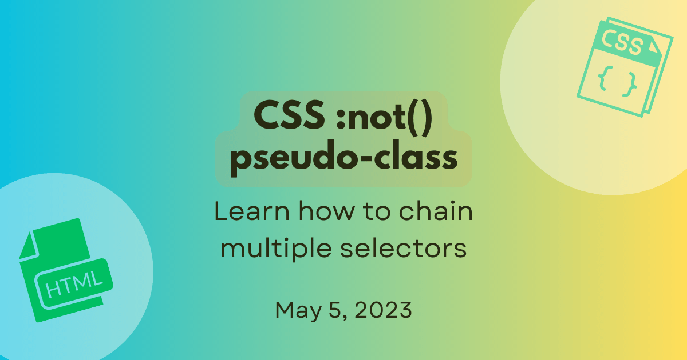

How :not() chains multiple selectors
In CSS rules, you normally select elements that you want to apply styles to and all matching elements get styled.
Have you ever wanted to apply styles to only a few elements and exclude everything else?
This is possible in CSS by using the :not() pseudo-class.
In this post, we'll take brief look at CSS pseudo-classes, how the :not() pseudo-class works, and how it behaves when multiple selectors are passed as an argument.
What are CSS pseudo-classes?
Before we get into :not(), let's take a quick look at CSS pseudo-classes.
In CSS, you use selectors to select the elements you want to style. For example, you can select all <li> elements and apply the aquamarine color to them:
/* Select and style all list items */
li {
color: aquamarine;
}
Pseudo-classes are keywords that you add to a selector. They let you style elements based on matching conditions other than by matching class or ID. So, by using a pseudo-class such as :required, you can target a form element based on whether or not it is required. A pseudo-class such as :first-child lets you select an element based on its position in the document tree. You can check out the complete list of pseudo-classes in CSS on MDN Web Docs.
One example of a commonly used pseudo-class is :visited that lets you style the links that have been visited by a user. This can be a neat way to also let users know the links they've already clicked.
/* Select and style visited links */
a:visited {
color: lightgreen;
}
What is the :not() pseudo-class?
:not() is the negation pseudo-class that selects elements that match none of the specified selectors. So you use :not() to apply style to elements excluded by the specified selectors.
Let's look at an example. Say you want to select and style all <code> elements on a page, but you want to exclude these elements when they're inside section headings. You can do this by using the :not() pseudo-class like this:
/* Style all code elements except those inside h2 elements */
code:not(h2 > code) {
color: red;
}
As you can see, the :not keyword is added to the element selector (<code>) and the not selector (h2 > code) is passed as an argument.
Negating a single selector
The Selectors Level 3 specification allowed only a single "simple selector" as an argument for :not().
So you could only style elements like this:
:not(.item__cost) {
font-family: "Montserrat";
}
In this example, all elements without the class .item__cost get the Montserrat font.
Negating multiple selectors
With Selectors Level 4, you can specify a "complex selector" as an argument for :not() and also pass multiple complex selectors in a comma-separated "selector list". This is supported in browser versions starting from Chrome 88, Firefox 84, and Safari 9.
Now you can use :not() like this:
/* Compound selector */
input:not(:required) {
color: #919191;
}
All <input> elements that are not required will be dark grey.
You can also pass a comma-separated list like this:
/* Compound selector */
input:not(:required, [type="button"]) {
background-color: blue;
}
All <input> elements that are not required and are not buttons will have a blue background.
To learn more about the differences between simple selectors, compound selectors, complex selectors, and selector lists, check out the Structure of a selector section in CSS selectors on MDN Web Docs.
Chaining multiple selectors
In CSS, when you want to apply the same style to multiple elements, you generally use a comma-separated selector list to group the selectors. This is illustrated below:
h1,
h2,
h3,
h4,
h5,
h6 {
font-family: helvetica;
}
Similarly, you can group several :not() declarations in a comma-separated list of selectors to apply the specified styles only to excluded matching elements. The result is a style that applies to any element excluded by the :not() selector.
Let's say we have a form where we want to style only the text fields that are editable. In the form in the example below, the field Employed is a menu option field, the Employment Date field has the type date, and the field Country has the attribute readonly. These are the fields that we want to exclude from styling and the ones we can target by using the :not() pseudo-class.
This is the HTML code for the above form where you can spot the attributes and type:
<form>
<label for="name" class="name">Name:</label>
<input type="text" id="name" name="name" value="Enter your name" />
<label for="emp" class="emp">Employed:</label>
<select name="emp" id="emp" disabled>
<option selected>No</option>
<option>Yes</option>
</select>
<label for="empDate">Employment Date:</label>
<input type="date" name="empDate" id="empDate" />
<label for="country">Country:</label>
<input
type="text"
name="country"
id="country"
value="United States"
readonly />
<label for="resume">Resume:</label>
<input type="file" name="resume" id="resume" />
</form>
The desired styling can be achieved by using the :not() pseudo-class as shown in the CSS below. The lightyellow background color applies to all <input> elements that do not have the disabled attribute or the readonly attribute or the type date. The result is the selection and styling of the fields Name, Employed, and Resume. Notice that even though the field Employed has the attribute disabled, it is not styled because it is a <select> element.
input:not([disabled], [readonly], [type="date"]) {
background-color: lightyellow;
color: red;
}
This is how :not() chains the multiple selectors.
Summary
To recap, use comma-separated selectors in the :not() pseudo-class to chain declarations for multiple selectors.
I hope you found this post helpful. If you have questions or feedback, feel free to contribute to the GitHub discussion about this post.
You can also drop in and say hello to us in the MDN Web Docs Discord server. Until next time, happy reading and building the web!